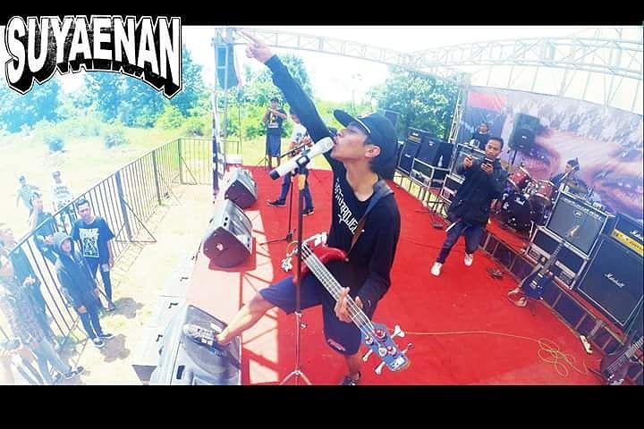
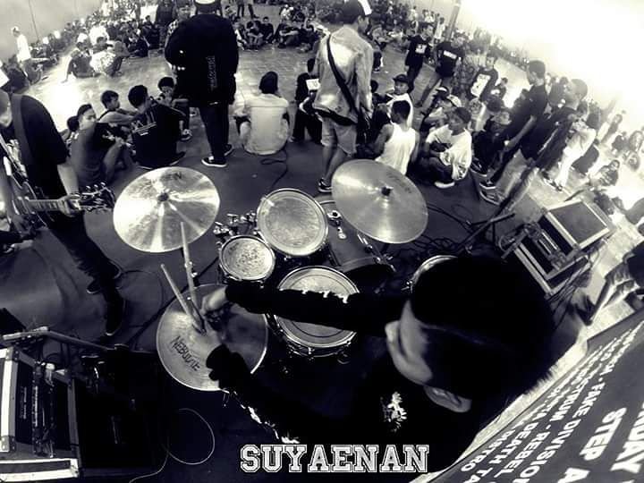

MUSIK INDIE
Musik Indie adalah sebuah web yang di dalam nya menyajikan info tentang musik bergendre Indie yang ada di Indonesia, dari mulai profil Band, lagu yang di bawakan, lirik, dan chord lagu dari beberapa band indie di Indonesia.
selain itu ada juga artikel tentang apa arti Indie , hingga sejarah nya band Indie di Indonesia.
Pembuatan website Musik Indie ini terinspirasi karna hoby dari conten creatornya yang penggiat musik, terutama musik indie di indonesia.
website ini di buat oleh Yoga Nur Faidzin Mahasiswa Universitas Pamulang sebagai tugas akhir mata kuliah Pemrograman Web 1. terimakasih sudah membaca dan menggunjungi website ini. semoga website ini bermanfaat.



| Hits Saat Ini


|